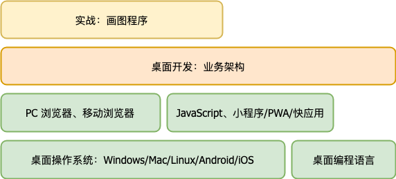
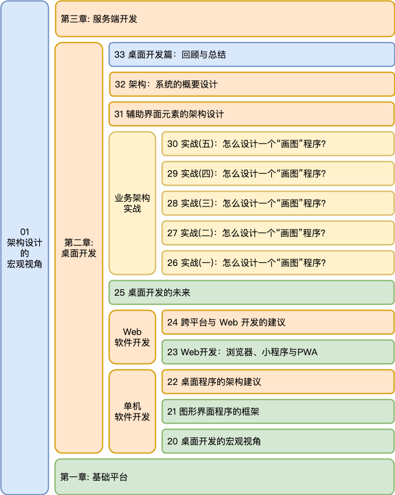

- 00 开篇词 怎样成长为优秀的软件架构师？.md.html
- 01 架构设计的宏观视角.md.html
- 02 大厦基石：无生有，有生万物.md.html
- 03 汇编：编程语言的诞生.md.html
- 04 编程语言的进化.md.html
- 05 思考题解读：如何实现可自我迭代的计算机？.md.html
- 06 操作系统进场.md.html
- 07 软件运行机制及内存管理.md.html
- 08 操作系统内核与编程接口.md.html
- 09 外存管理与文件系统.md.html
- 10 输入和输出设备：交互的演进.md.html
- 11 多任务：进程、线程与协程.md.html
- 12 进程内协同：同步、互斥与通讯.md.html
- 13 进程间的同步互斥、资源共享与通讯.md.html
- 14 IP 网络：连接世界的桥梁.md.html
- 15 可编程的互联网世界.md.html
- 16 安全管理：数字世界的守护.md.html
- 17 架构：需求分析 (上).md.html
- 18 架构：需求分析 (下) · 实战案例.md.html
- 19 基础平台篇：回顾与总结.md.html
- 20 桌面开发的宏观视角.md.html
- 21 图形界面程序的框架.md.html
- 22 桌面程序的架构建议.md.html
- 23 Web开发：浏览器、小程序与PWA.md.html
- 24 跨平台与 Web 开发的建议.md.html
- 25 桌面开发的未来.md.html
- 26 实战（一）：怎么设计一个“画图”程序？.md.html
- 27 实战（二）：怎么设计一个“画图”程序？.md.html
- 28 实战（三）：怎么设计一个“画图”程序？.md.html
- 29 实战（四）：怎么设计一个“画图”程序？.md.html
- 30 实战（五）：怎么设计一个“画图”程序？.md.html
- 31 辅助界面元素的架构设计.md.html
- 32 架构：系统的概要设计.md.html
- 33 桌面开发篇：回顾与总结.md.html
- 34 服务端开发的宏观视角.md.html
- 35 流量调度与负载均衡.md.html
- 36 业务状态与存储中间件.md.html
- 37 键值存储与数据库.md.html
- 38 文件系统与对象存储.md.html
- 39 存储与缓存.md.html
- 40 服务端的业务架构建议.md.html
- 41 实战（一）：“画图”程序后端实战.md.html
- 42 实战（二）：“画图”程序后端实战.md.html
- 43 实战（三）：“画图”程序后端实战.md.html
- 44 实战（四）：“画图”程序后端实战.md.html
- 45 架构：怎么做详细设计？.md.html
- 46 服务端开发篇：回顾与总结.md.html
- 47 服务治理的宏观视角.md.html
- 48 事务与工程：什么是工程师思维？.md.html
- 49 发布、升级与版本管理.md.html
- 50 日志、监控与报警.md.html
- 51 故障域与故障预案.md.html
- 52 故障排查与根因分析.md.html
- 53 过载保护与容量规划.md.html
- 54 业务的可支持性与持续运营.md.html
- 55 云计算、容器革命与服务端的未来.md.html
- 56 服务治理篇：回顾与总结.md.html
- 57 心性：架构师的修炼之道.md.html
- 58 如何判断架构设计的优劣？.md.html
- 59 少谈点框架，多谈点业务.md.html
- 60 架构分解：边界，不断重新审视边界.md.html
- 61 全局性功能的架构设计.md.html
- 62 重新认识开闭原则 (OCP).md.html
- 63 接口设计的准则.md.html
- 64 不断完善的架构范式.md.html
- 65 架构范式：文本处理.md.html
- 66 架构老化与重构.md.html
- 67 架构思维篇：回顾与总结.md.html
- 68 软件工程的宏观视角.md.html
- 69 团队的共识管理.md.html
- 70 怎么写设计文档？.md.html
- 71 如何阅读别人的代码？.md.html
- 72 发布单元与版本管理.md.html
- 73 软件质量管理：单元测试、持续构建与发布.md.html
- 74 开源、云服务与外包管理.md.html
- 75 软件版本迭代的规划.md.html
- 76 软件工程的未来.md.html
- 77 软件工程篇：回顾与总结.md.html
- 加餐 如何做HTTP服务的测试？.md.html
- 加餐 实战：“画图程序” 的整体架构.md.html
- 加餐 怎么保障发布的效率与质量？.md.html
- 热点观察 我看Facebook发币（上）：区块链、比特币与Libra币.md.html
- 热点观察 我看Facebook发币（下）：深入浅出理解 Libra 币.md.html
- 用户故事 站在更高的视角看架构.md.html
- 答疑解惑 想当架构师，我需要成为“全才”吗？.md.html
- 结束语 放下技术人的身段，用极限思维提升架构能力.md.html
- 课外阅读 从《孙子兵法》看底层的自然法则.md.html
- 捐赠
33 桌面开发篇：回顾与总结
你好，我是七牛云许式伟。
到今天为止，我们第二章 “桌面开发篇” 就要结束了。今天，让我们对整章的内容做一个回顾与总结。本章我们主要涉及的内容如下。

这一章的内容主要分为三类。
一类是基础平台，也就是上图中的浅绿色背景部分，谈的是 Native 桌面操作系统和浏览器的演变过程。
一类是业务架构，也就是上图中的浅棕色背景部分，谈得是如何开发一个桌面软件。
最后一类是实战，也就是上图浅黄色背景部分，我们以画图程序作为例子谈业务架构，并对需求进行了多次的迭代。
通过本章的内容，我们总结一下桌面开发的特点。
首先从基础平台看。它的特点是：种类多、迭代快、知识有效期短。 让桌面开发工程师（大前端）痛苦的是，时不时就有各种新平台、新语言、新框架冒出来，让人应接不暇。
其次从要开发的产品本身看。它的特点是：需求多、迭代快。 桌面开发（大前端）负责的是和活生生的个体打交道，我们的开发人员需要为了功能丰富，体验便捷做各种努力。
为了让产品有竞争力，很多团队的发布周期都是至少一个月迭代一个版本，有的甚至是一周发布一个版本。而Web 前端就更夸张了，一些公司甚至没有统一的发版概念，只要某个功能产品经理验收了，测试验收了，就可以发。
最后我们从对程序员的技能要求看。它的特点是门槛极低，但天花板又极高。
桌面开发（大前端）的代码量大，代码变更又很频繁，所以它对程序员的第一要求，不是质量，而是数量上的需求极大。为什么 GitHub 的语言排行榜总是 JavaScript 排名第一？这不是别的原因，是市场需求所致。
与之相对的，服务端开发则非常不同。服务端开发并不是一上来就有的，是互联网出现后产生的新分工。它并不负责用户交互，所以在需求提炼时可以做到极强的可预测性。因而服务端的第一挑战往往不是快速响应，而是性能和稳定性等质量需求。
桌面开发的客观需求量大，这决定了它的门槛要求必须极低。我在描述桌面开发的未来也提到过，桌面开发技术的演进方向，是 7-8 岁的儿童也可以开发生产级的应用。这是门槛低的极致状态。
但是为什么我又说桌面开发的天花板又极高呢？因为桌面开发的团队人数多、人员质量参差不齐、代码量大、迭代变更频繁，这意味着桌面软件工程项目的管理难度极高。所以桌面开发对架构师能力、软件工程的水平要求之高，要远高于服务端开发。
当然，从国内的现状来说，凡是堆人和加班可以解决的，最终都是用堆人和加班解决。架构师能力培养和软件工程能力提升？对大部分公司来说，他们的想法可能是：这太慢了，等不起。
桌面开发篇的内容回顾
这一章前面我们讲了些什么？为了让你对第二章内容有个宏观的了解，我画了一幅图，如下。

我们首先从单机软件开发讲起。我们开篇第一讲首先回顾了桌面开发关于交互方式的变更。从最早命令行程序，到 2D/3D GUI 图形界面程序，到智能交互程序的萌芽。
为什么我们从交互变更谈起？因为这是桌面系统迭代的根源。每一次桌面系统大的变更周期，都是由一场新的交互革命所驱动。
随后，我们介绍了今天仍然处于主流地位的图形界面操作系统提供的编程框架。尽管使用接口各不相同，但是今天主流桌面操作系统的框架本质大同小异，都是基于事件分派做输入，GDI 做界面呈现。

互联网的出现，衍生出了浏览器，它支持了一种新的应用形态：Web 应用。这意味着在操作系统之上，产生了一个新操作系统。Web 应用也在演变，从静态页，到以 Gmail 为代表的 AJAX 应用，到 PWA，到小程序。
PC 浏览器之争已经结束，但移动浏览器的竞争才刚开始。
怎么做一个桌面程序？标准的套路是 MVC 架构。无论是单机还是 Web 应用，它都是适用的，只是 Web 程序需要考虑客户端与服务端的分工，需要引入网络协议。
跨平台开发，是桌面程序开发绕不过去的问题。几年前也许不明显，这得益于 Android 和 iOS 的垄断。但是现在又回到了群雄逐鹿的时期。Native 手机操作系统、传统 Web、众多的小程序种类、国际市场的 PWA 等等，需要综合考虑进行取舍。
聊完单机软件和 Web 应用，我们也探讨了桌面开发的未来趋势。桌面开发技术的演进，目标是越来越低的门槛，它和儿童编程教育相向而行，有一天必然汇聚于一点上。
为了让你更好地理解桌面开发的架构逻辑，我们引入了一个长达 5 讲的实战案例。这个案例建议深度消化。
为什么实战是很重要的？
学架构，我个人强调的理念是 “做中学”。
首先还是要勤动手。然后配合本专栏去思考和梳理背后的道理，如此方能快速进步。
我们不能把架构课学成理论课。计算机科学本身是一门实践科学，架构经验更是一线实战经验的积累和总结。
通过这个实战案例，我们也探讨了辅助界面元素，也就是控件的架构。控件架构没有什么特别的地方，唯一需要注意的是支持多实例。用多实例去思考你的应用程序架构的合理性，会有助于你对架构设计中的一些决策提供帮助。
当然更重要的，其实是让你有机会形成更好的架构设计规范。
作为最后收官，我们聊了架构第二步：系统的概要设计，简称系统设计。我们这个阶段关注的是全局性的风险，怎么保证项目可以按时、按质、高度并行化地被执行。
系统架构打的是地基。
这个阶段需要选择操作系统、选择语言、选择主框架，选择项目所依赖的最核心的基础设施。这就是我说的有关于基础架构的工作。
这个阶段也需要分解业务系统。我们一般以子系统为维度来阐述系统各个角色之间的关系。对于关键的子系统，我们还会进一步分解它，甚至详细到把该子系统的所有模块的职责和接口都确定下来。
这个阶段我们的核心意图并不是确定系统完整的模块列表，我们的焦点是整个系统如何被有效地串联起来。如果某个子系统不作进一步的分解也不会在项目上有什么风险，那么我们并不需要在这个阶段对其细化。
为了降低风险，概要设计阶段也应该有代码产出。
这样做的好处是，一上来我们就关注了全局系统性风险的消除，并且给了每个子系统或模块的负责人一个更具象且确定性的认知。
代码即文档。代码是理解一致性更强的文档。
桌面开发篇的参考资料
桌面开发的知识迭代更新非常快，所以很难去列经典书籍。
这里我列一下我认为值得重点关注的技术：
- JavaScript。毫无疑问，这是当前桌面开发的第一大语言，务必要精通。这方面我推荐程劭非（winter）的极客时间专栏“重学前端”。
- 微信小程序。这方面资料比较少，我推荐高磊的极客时间视频课“9小时搞定微信小程序开发”。
- React 和 Vue。这应该当前比较知名的两大前端框架，可以学习一下。前者可以看下王沛的“React实战进阶45讲”，后者可以看下唐金州的“Vue开发实战”。
- Flutter 和 SwiftUI。这两个技术很新，其中 Flutter 已经有一些资料，比如陈航的“Flutter核心技术与实战”。SwiftUI 与 Swift 语言关联很紧，在张杰的“[Swift核心技术与实战]”中有所涉略。
- PWA 和 WebAssembly。这方面图书还比较少，不妨看官方材料结合实战来学习。
当然，经典的 Android、iOS 方面的开发资料，也值得看看。这方面资料非常多，我就不再去提名了。
结语
今天我们对本章内容做了概要的回顾，并借此对整个桌面开发的骨架进行了一次梳理。
这一章我们开始聊业务架构。学业务架构最好的方式是：“做中学”。做是最重要的，然后要有做后的反思，去思考并完善自己的理论体系。
如果你对今天的内容有什么思考与解读，欢迎给我留言，我们一起讨论。下一讲我们开始进入第三章：服务端开发篇。
如果你觉得有所收获，也欢迎把文章分享给你的朋友。感谢你的收听，我们下期再见。
© 2019 - 2023 Liangliang Lee. Powered by gin and hexo-theme-book.